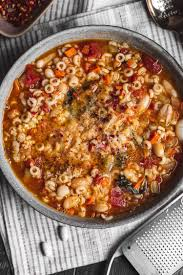

Home
Pasta e Fagioli

Description
A heary Italian soup with pasta and beans
Ingredients
- 2 Tbsp olive oil, divided
- 1 lb lean ground beef
- 1 1/2 cups chopped yellow onion
- 1 cup diced carrots (about 2 medium)
- 1 cup diced celery (about 3 stalks)
- 3 cloves garlic, minced (1 Tbsp)
- 3 (8 oz) cans tomato sauce
- 2 14.5 oz cans low-sodium chicken broth
- 1/2 cup water, then more as desired
- 1 (15 oz) can diced tomatoes
- 2 tsp granulated sugar
- 1 1/2 tsp dried basil
- 1 tsp dried oregano
- 3/4 tsp dried thyme
- 1/2 tsp dried marjoram
- Salt and freshly ground black pepper
- 1 cup dry ditalini pasta
- 1 (15 oz) can dark red kidney beans, drained and rinsed
- 1 (15 oz) can great northern beans, drained and rinsed
- Finely shredded Romano or Parmesan cheese , for serving
- 3 Tbsp minced fresh parsley
Directions
- Heat 1 Tbsp olive oil in a large pot over medium high heat, crumble in ground beef or sausage and cook, stirring occasionally
until cooked through.
- Drain fat from beef then transfer beef to a plate, set aside. Heat remaining 1 Tbsp olive oil in same pot.
- Add onions, carrots, and celery and saute over medium-high heat until tender about 6 minutes, add garlic and saute 1 minute
longer.
- Add chicken broth, tomato sauce, water, canned tomatoes, sugar, basil, oregano, thyme, marjoram and cooked beef then
season with salt and pepper to taste.
- Bring to a boil then reduce heat to medium-low, cover with lid and allow to simmer, stirring occasionally, until veggies are
soft, about 15 - 20 minutes.
- Meanwhile prepare ditalani pasta according to directions on package, cooking to al dente.
- Add cooked and drained pasta to soup* along with kidney beans and great northern beans. Thin with a little more broth or
water if desired.
- Allow to cook 1 minute longer. Stir in parsley, serve warm with grated Romano or Parmesan cheese.